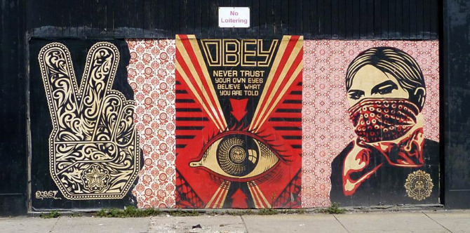

More about the culture of Graffiti

London has always been well ahead of other capital cities in terms of architecture, design, fashion and music, and the same can be said about its street art scene. Just when street art was becoming a thing in other major cities around the world, street artists in London were already painting the town red with their eye-opening, jaw-dropping canvases which were plastered all over the city walls, factories, buildings, bridges and even store shutters.

The city's trendiest neighborhood is a great place to start your street art journey. The polka dot wall in an alleyway off Main Street (across from Clyde's On Main) is a popular spot for photos, but the artist isn't listed.
Alongside The Crash Pad Chattanooga is the “Traveling Musician,” painted by The Artist Seven, which honors the city's musical and railroad history. The neighboring Chattanooga Choo Choo also has some temporary art pieces on the interior side that faces Songbirds.
The historic district that honors Martin Luther King Jr. has murals relevant to him and African-American history. The largest, below, titled “We Will Not Be Satisfied Until” is by Meg Saligman Studios and covers two sides of the building

Amsterdam municipality has an interesting approach towards the graffiti artists, trying to decriminalize the whole activity by creating legal opportunities and places to paint, by promoting the most interesting graffiti painters to the status of an artist accepted by the society, by sponsoring them, giving them commissions to decorate, trying to convince them to move with their painting to canvas, promoting exhibitions and finally purchasing most interesting works to the museums. Last year several museums of have exhibited graffiti at work
